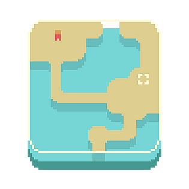

Deep
Puzzle action game where you destroy the conduits by gathering energy from the water. WASD or Arrow Keys to move. Mouse to aim and shoot. Destroy all conduits to progress to the next level.
Overdoze
You could modify the board's colors through your assigned tile. Try to match at least 3 tiles using your assigned tile to pop those tiles. After you try to match it, your assigned tile would be set to another random color. The faster you successfully match and pop tiles, the higher your overdoze. Be careful as once you are on an overdoze chain, you can't stop anymore lest the game would be over if it ever hits 0. Compete on who got the highest score and combo/overdoze.
Foreign

A mysterious tourist. An unknown land. Is he capable of dealing with the natives? Game made for the Pygame Jam: Dimensions. Story about a normal man who secretly lives as a mage and banishes evil wherever he goes.
Iron Heart
Called into the Grave of Swords, the Iron Heart ventured deep into the pit only to find the Iron Sword calling to him. Leading him to his destiny. Now, only the traps awaiting the grave's exit are the hindrance to his legend. Game made for ScoreSpace Game Jam with the theme: Magnetic
Dragon Gate
A mere fish leaping through the Dragon Gate? Preposterous!.. Or is it?... Game submitted for the Mini Jam 104 : Cascade (Although it's a bit late) This game is about a chinese story... or something idk. I read enough cultivation novels to know that the phrase "fish leaping over the dragon gate" is pretty darn common. It's about a fish going against a waterfall's tides and leaping the dragon gate to become a dragon itself.
Remnant
Grudge and hatred, all in one being granting him immense power. After the darkness within him was cast unto the world, he who was blinded by it felt clarity and saw the truth. Help him fix his mistakes and return the world to its former peace. This is a submission for the Mini Jam 103 : Darkness